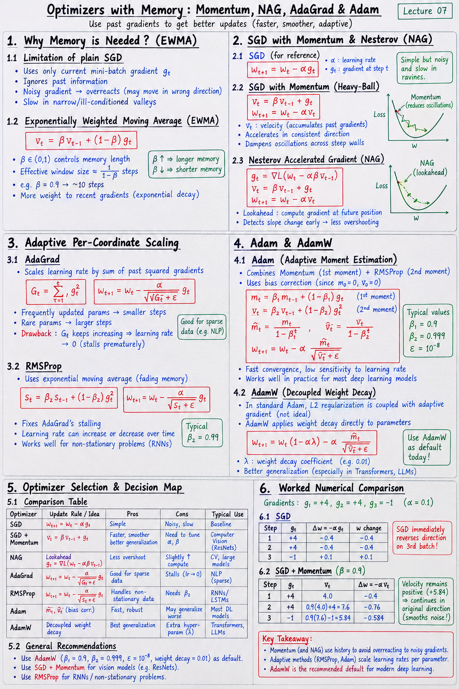

Executive Summary & Formula Sheet
Core Concept: Standard SGD sees only the current mini-batch gradient and forgets prior history. Advanced optimizers maintain exponential moving averages of gradients (1st moment, for direction/velocity) and squared gradients (2nd moment, for adaptive coordinate scaling). AdamW decouples L2 weight decay from adaptive gradients for superior generalization.
- EWMA Formula: vt = β vt-1 + (1 - β) gt
- SGD + Momentum: \(v_t = \beta v_{t-1} + g_t\); \(w_{t+1} = w_t - \alpha v_t\)
- NAG (Lookahead): Evaluate gradient at predicted position \(g_t = \nabla L(w_t - \alpha \beta v_{t-1})\)
- RMSProp Scale: \(s_t = \beta_2 s_{t-1} + (1-\beta_2) g_t^2\); \(w_{t+1} = w_t - \frac{\alpha}{\sqrt{s_t + \epsilon}} g_t\)
- Adam (Bias Corrected): \(\hat{m}_t = \frac{m_t}{1 - \beta_1^t}\), \(\hat{v}_t = \frac{v_t}{1 - \beta_2^t}\); \(w_{t+1} = w_t - \frac{\alpha}{\sqrt{\hat{v}_t} + \epsilon} \hat{m}_t\)
- AdamW: \(w_{t+1} = w_t (1 - \alpha \lambda) - \frac{\alpha}{\sqrt{\hat{v}_t} + \epsilon} \hat{m}_t\)
Handwritten Short Notes

Click image to open high-resolution version in new tab
1. Why Memory is Needed (EWMA)
1.1 Plain SGD Short-sightedness
Plain SGD updates parameters purely based on the instantaneous gradient of the current mini-batch. If a noisy mini-batch yields an outlier gradient, SGD immediately overreacts in that single direction, ignoring consistent trends established over past iterations.
1.2 Exponentially Weighted Moving Average Math
EWMA aggregates past values with exponentially decaying weights:
. The parameter \(\beta \in (0,1)\) controls memory length: effective window size is approximately \(\frac{1}{1-\beta}\) steps (e.g., \(\beta = 0.9\) averages over 10 steps).
2. SGD with Momentum & Nesterov (NAG)
2.1 Heavy-Ball Momentum Rule
Simulates a heavy ball rolling down the loss landscape. Velocity vector \(v_t = \beta v_{t-1} + g_t\) accumulates consistent directional gradients, accelerating progress along flat valleys and dampening oscillations across steep walls.
2.2 Nesterov Accelerated Gradient Lookahead
Instead of calculating gradient at current position \(w_t\), NAG computes gradient at the projected future position \(w_t - \alpha \beta v_{t-1}\). This lookahead step allows NAG to detect upcoming slope reversals early and apply braking before overshooting.
3. Adaptive Per-Coordinate Scaling
3.1 AdaGrad Accumulation & Stalling
AdaGrad divides learning rate by square root of sum of all past squared gradients \(G_t = \sum_{\tau=1}^t g_\tau^2\). Frequently updated parameters get smaller steps; rare parameters get larger steps. However, monotonically increasing \(G_t\) eventually causes learning rate to shrink to zero, stalling learning prematurely.
3.2 RMSProp Fading Memory Scale
RMSProp fixes AdaGrad's stalling by replacing raw sum with an exponential moving average of squared gradients: \(s_t = \beta_2 s_{t-1} + (1-\beta_2) g_t^2\). This allows effective learning rates to adjust dynamically up or down over time.
4. Adam & AdamW Optimizers
4.1 Dual Memory (1st & 2nd Moments) + Bias Correction
Adam combines Momentum (1st moment \(m_t\), \(\beta_1=0.9\)) and RMSProp (2nd moment \(v_t\), \(\beta_2=0.999\)). Because \(m_0=0\) and \(v_0=0\), initial estimates are biased towards zero. Adam applies bias correction: \(\hat{m}_t = \frac{m_t}{1-\beta_1^t}\) and \(\hat{v}_t = \frac{v_t}{1-\beta_2^t}\).
4.2 Decoupled Weight Decay in AdamW
In standard Adam, adding L2 regularization to loss conflates weight decay with adaptive gradient scaling, penalizing large parameters incorrectly. AdamW applies weight decay directly to parameters: \(w_{t+1} = w_t(1-\alpha \lambda) - \frac{\alpha}{\sqrt{\hat{v}_t}+\epsilon}\hat{m}_t\), significantly improving generalization in Transformers and deep models.
5. Optimizer Selection & Decision Map
5.1 Comparative Trade-off Matrix
SGD + Momentum: Outstanding generalization; requires careful learning rate & momentum tuning. Preferred for Computer Vision (ResNets).
RMSProp: Great for non-stationary problems, Recurrent Neural Networks (RNNs/LSTMs).
Adam / AdamW: Robust, fast convergence, low sensitivity to initial learning rate. Standard default for Transformers, LLMs, and complex architectures.
5.2 Domain-specific Recommendations
Use AdamW (\(\beta_1=0.9, \beta_2=0.999, \epsilon=10^{-8}\), weight decay 0.01) as your initial default optimizer for almost all deep learning architectures today.
6. Worked Numerical Comparison
6.1 Gradients +4, +4, -1 Simulation
Consider 3 successive mini-batches yielding gradients \(g_1 = +4, g_2 = +4, g_3 = -1\). Should the optimizer reverse direction after the 3rd batch?
6.2 SGD vs Momentum Step Trajectory
- SGD (\(\alpha = 0.1\)): Step 1: \(\Delta w = -0.4\); Step 2: \(\Delta w = -0.4\); Step 3: \(\Delta w = +0.1\). SGD immediately reverses direction on batch 3!
- SGD + Momentum (\(\beta = 0.9, \alpha = 0.1\)):
- \(v_1 = 4.0 \implies \Delta w_1 = -0.4\)
- \(v_2 = 0.9(4.0) + 4.0 = 7.6 \implies \Delta w_2 = -0.76\)
- \(v_3 = 0.9(7.6) + (-1.0) = 6.84 - 1.0 = 5.84 \implies \Delta w_3 = -0.584\)
- Notice velocity remains positive (\(+5.84\)), so parameter step \(-0.584\) continues moving in the original direction, smoothing out the transient noise!